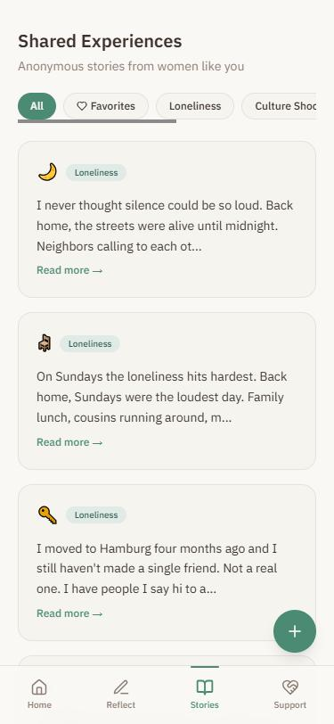
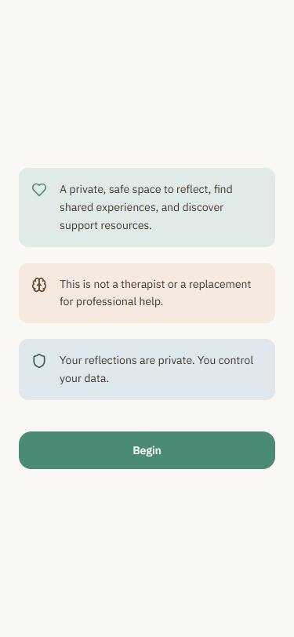

SafeSpace
Analytical Design Fiction · Critical HCI · 2026
Can a machine offer a sense of belonging without ever belonging to you?
Moving to a new country means navigating unfamiliar systems, distant relationships and moments of loneliness. In these moments, an AI conversation can become an unexpectedly accessible space: always available, seemingly attentive, and free from the obligation of explaining yourself to another person.
But what happens when a machine becomes part of how we experience care?
SafeSpace explores this question through the experiences of recently arrived Iranian women in Germany. It investigates how AI-mediated emotional support is understood, negotiated and positioned alongside human relationships and community-based support.
Three spaces between the self and others
- 01 / Reflect. A private space to articulate thoughts, navigate uncertainty and express emotions through AI-assisted journaling. How much to share remains a personal decision.
- 02 / Recognise. An archive of anonymous experiences from other women. Connection becomes possible through recognition, without requiring direct interaction or personal disclosure.
- 03 / Reach out. A directory of counselling, legal and integration resources. A reminder that emotional support also exists beyond the interface.


Proposition
What if an AI companion was designed not to become your closest relationship, but to help you recognise what it cannot provide?
An artefact of artificial care
SafeSpace is a conceptual interaction artefact developed through analytical design fiction. Rather than imagining an AI that simulates increasingly human forms of intimacy, it explores a more bounded form of companionship: one that offers space for reflection, makes shared experiences visible, and keeps pathways to human support within reach.
The prototype brings this proposition into an interactive form.
The research behind the fiction
Eight narrative interviews with Farsi-speaking Iranian women who had lived in Germany for less than two years formed the empirical foundation of the project.
Through qualitative thematic analysis, I developed five structured tensions from participants' accounts. These informed a series of situated design-fiction scenarios, using composite characters to explore how competing expectations around AI-mediated support might unfold in everyday situations.
The interactive prototype translates selected insights into a conceptual design artefact.
Five tensions, no easy answers
The design fiction scenarios explore five tensions emerging from the research:
- Orientation vs. uncertainty: Can AI provide clarity without creating false confidence?
- Expression vs. self-protection: Can a private conversation make vulnerability easier while preserving personal boundaries?
- Digital clarity vs. relational depth: Is feeling understood the same as being understood?
- Being remembered vs. being tracked: When does continuity become an intrusion?
- Warmth vs. artificiality: How much simulated empathy feels comforting before it becomes uncomfortable?
These tensions are not resolved by the artefact. They are made tangible through its interaction design.
What should artificial care look like?
SafeSpace does not attempt to solve loneliness through technology. Instead, it asks what role AI should occupy when people seek emotional support under conditions of vulnerability and social transition.
Perhaps the most important design decision is not how closely a machine can imitate human care, but how clearly it can acknowledge its limits.